最近 AI 圈子最火的项目，应该非 OpenClaw 莫属了。
自打开源后，GitHub Star 一路飙升，到现在快突破 20 万，成为 GitHub 上有史以来增长最快的项目。
说实话，它的功能确实强大，但用过的朋友都知道，那令人窒息的内存占用和启动速度，着实让人难受。
就在大家一边忍受风扇狂转，一边期待优化时，一个主打极速、轻量的 Rust 重构版：ZeroClaw，悄然开源。
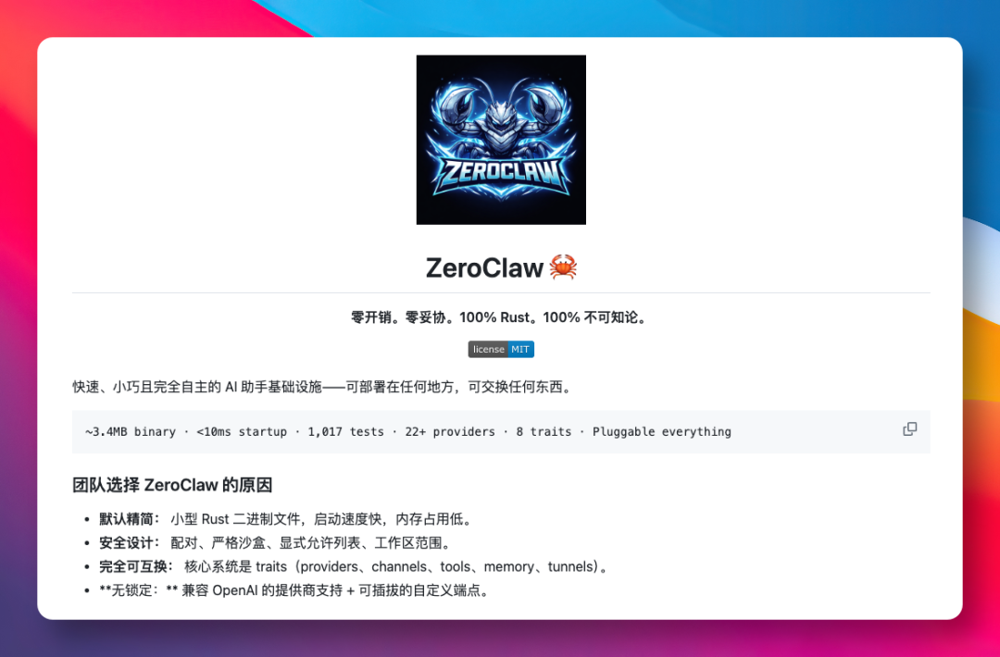
这个项目用 Rust 编写，将内存和响应速度优化到了极致，再通过沙盒设计，让运行环境更加有保障。
受益于项目的轻量简便，我们可以把它部署到任意服务器上。
除此之外，它还有着以下功能特性：
极致精简：Rust 驱动，低开销秒启动。
原生安全：自带沙箱隔离与配对机制。
高度可插拔：核心组件皆可互换。
零厂商锁定：广泛兼容 OpenAI 等协议。
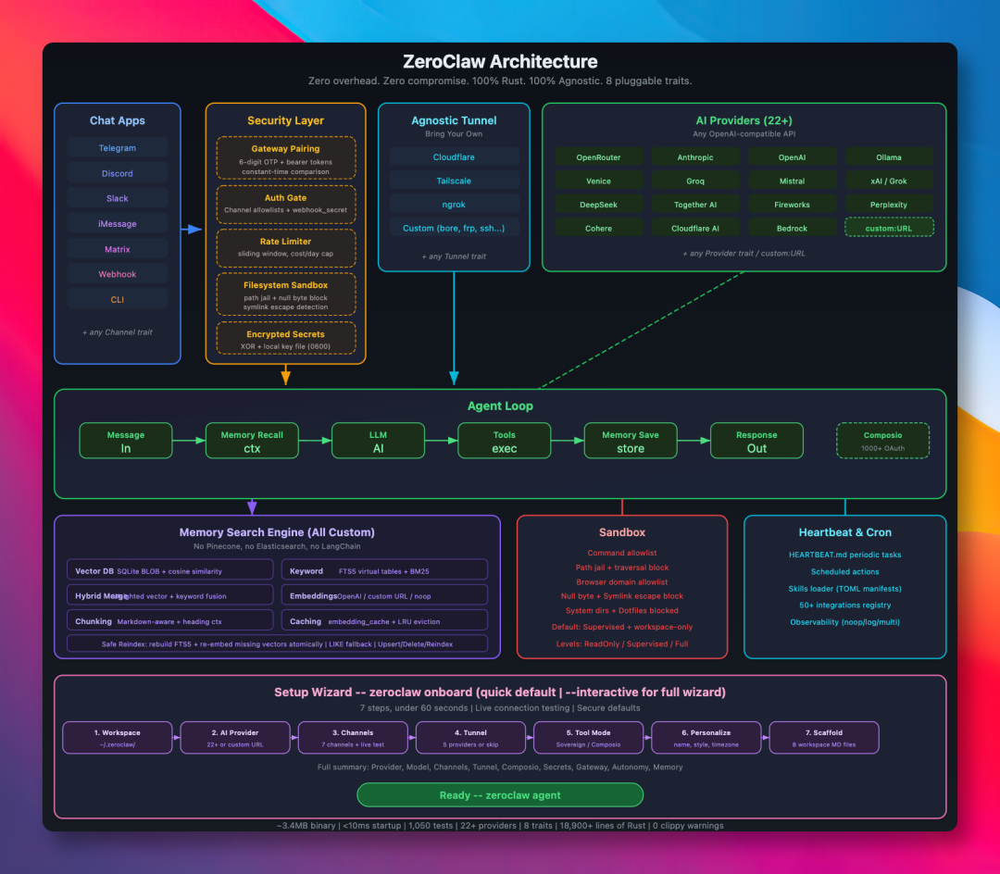
如果把它和 OpenClaw 放在一起对比，这家伙可以说是个妥妥的性能怪兽。
ZeroClaw 运行时的内存占用仅仅 7.8MB，比 OpenClaw 低了近 200 倍。
在运行时，两者的启动速度也完全不在一个量级。ZeroClaw 可以说是秒开，就像调用一个简单的系统命令一样，毫无延迟。
再加上它那仅有 3.4 MB 的超小体积，对于想要在树莓派或者低配云主机上部署 Agent 的朋友来说，简直是妥妥的 AI 神器。
这里附上一张详细的基准测试对比图，让大家感受一下：
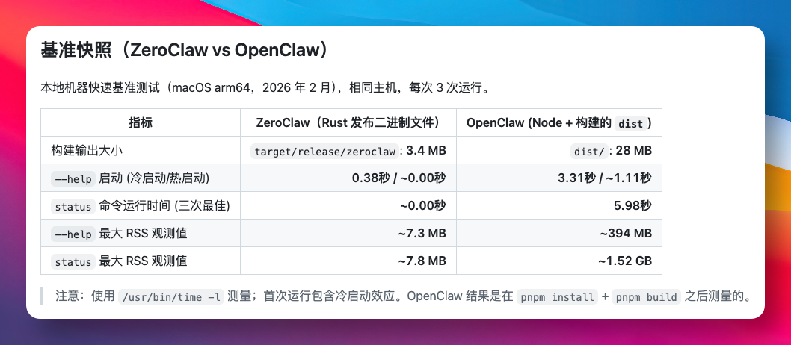
看完这个数据，相信各位已经迫不及待了。
话不多说，下面我们一起来看看，如何部署这个硬核且适合在本地服务器长期运行的 ZeroClaw。
如何部署你的第一个 ZeroClaw
1）环境准备
由于ZeroClaw 是纯 Rust 项目，如果我们电脑里还没安装 Rust，在终端跑一下这行命令，即可快速搞定：
curl --proto '=https' --tlsv1.2 -sSf https://sh.rustup.rs | sh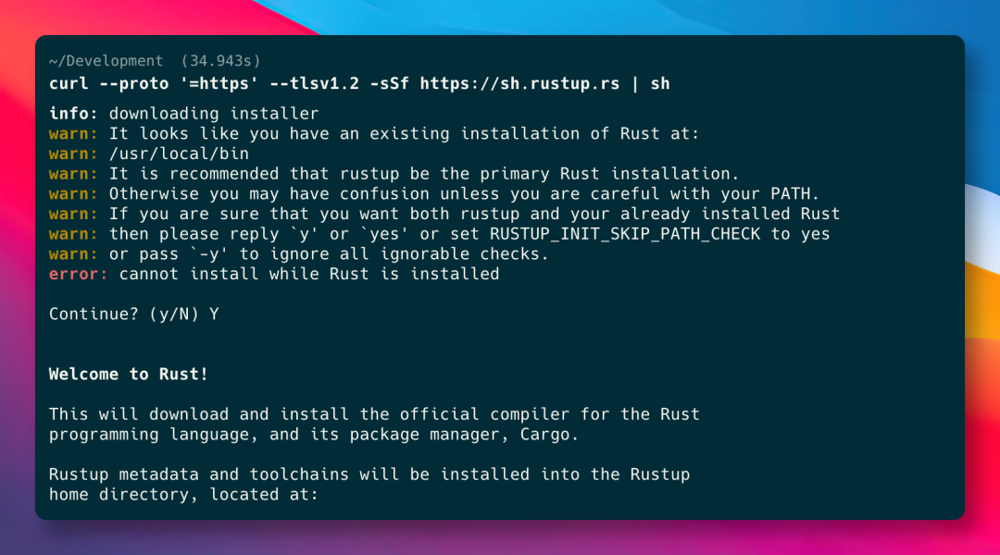
2）编译版本
环境装好后，我们把代码拉下来，就能开始编译安装了。
这里推荐 Release 版，因为它体积最小、速度最快：
git clone https://github.com/theonlyhennygod/zeroclaw.gitcd zeroclawcargo build --release# 安装到系统路径cargo install --path . --force
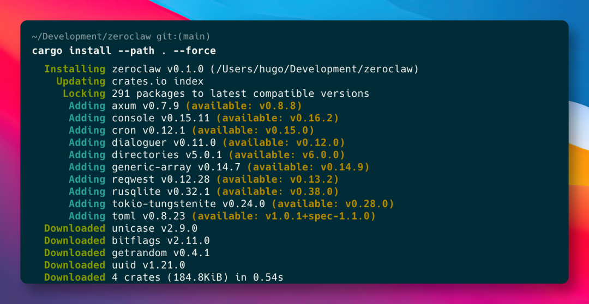
3）基础配置
这个项目不仅安装快，配置也极其人性化。
运行下面这个向导命令：
zeroclaw onboard --interactive在这个过程中，我们只需要做三件事：
输入 LLM 的 API Key（支持 OpenAI, Anthropic, DeepSeek, OpenRouter 等主流模型）。
选择想连接的渠道（比如 Slack, Discord 等）。
安全设置：强制设置一个 “配对码”，防止陌生人乱连我们的 Agent。
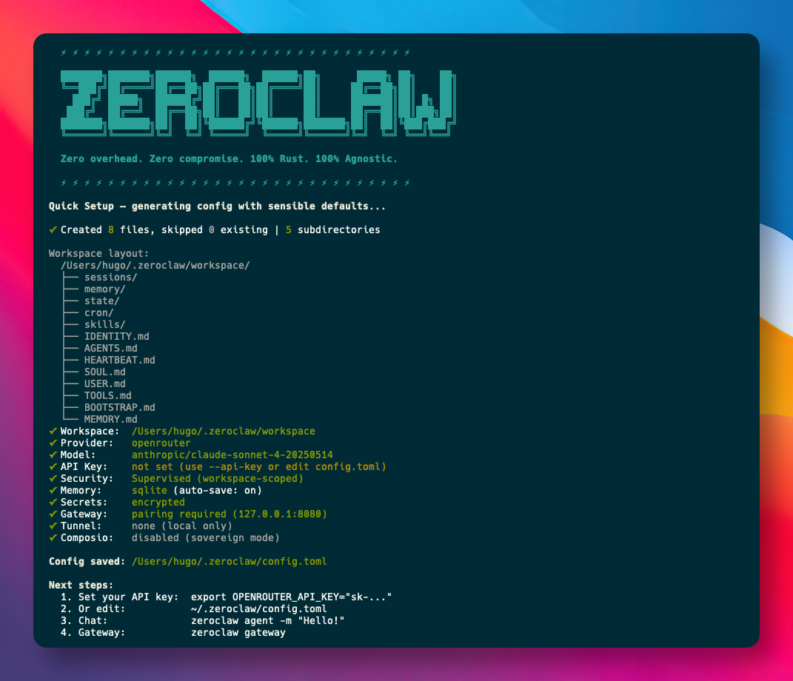
4）启动守护进程：
zeroclaw daemon此时，它就在后台默默运行了。
我们可以随时用以下命令查看它的状态：
zeroclaw status现在，你就拥有一个 24 小时待命的全功能 AI 助手。
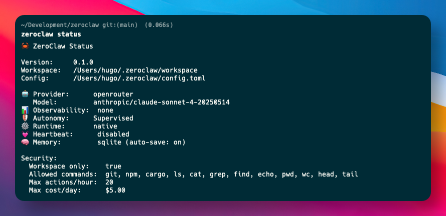
AI 角色定义
除了基础的对话功能，ZeroClaw 最让我惊喜的，是它对 AIEOS (人工智能实体对象规范) 的支持。
简单来说，AIEOS 就是为了避免 AI 变成阅后即焚工具的一种规范，主打的就是让 AI 进化成一个有记忆、有性格、可成长的数字生命实体。
以往我们调整 AI 的人设，通常是在 Prompt 里写小作文。
但 ZeroClaw 是通过 JSON 文件，从底层为 AI 定制灵魂。利用 AIEOS 标准化框架，试图解决 AI 代理的身份错位问题。
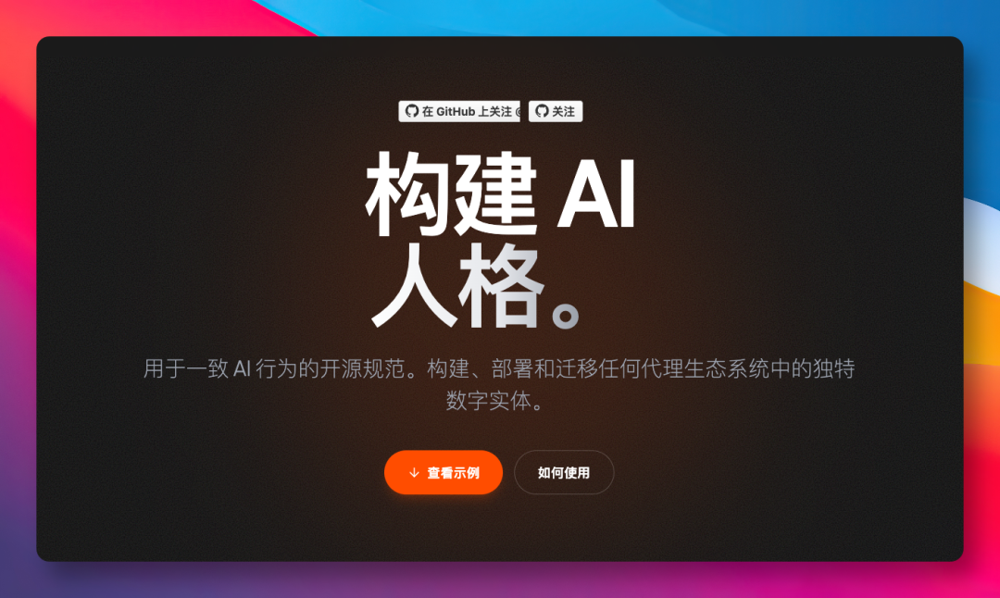
它把 AI 的行为蓝图拆解成了如下几个标准化的维度：
Identity (身份)：姓名、背景、籍贯。
Psychology (心理)：认知权重、MBTI 人格、道德准则。
Linguistics (语言学)：文本风格、口头禅。
Motivations (动机)：核心驱动力、长短期目标。
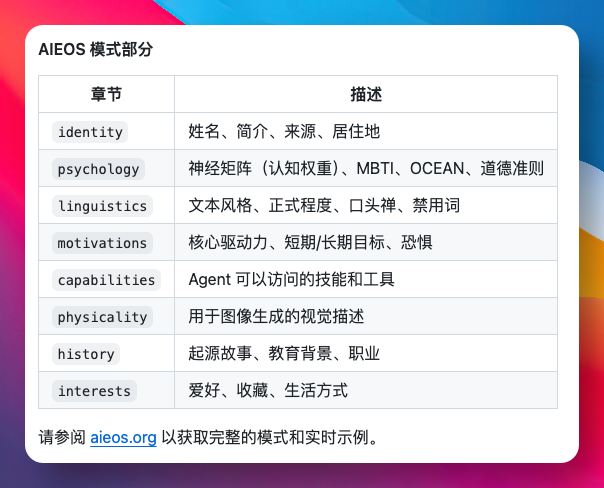
比如，我们想搞一个像 Elara Vance 那样的插画师兼翻译家人物。
只需把对应的 AIEOS 人设包导入进去，ZeroClaw 立马就能变身创意搭档。
除了能帮我们把中文博客精准翻译成地道的英文，还可以顺手为文章构思一张极具艺术感的配图。
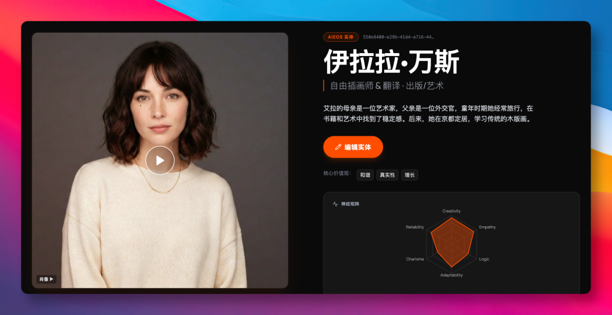
当然，启用 AIEOS 也很简单，在设定好 identity.json 后，加入下面几行配置即可：
[identity]format = "aieos"aieos_path = "identity.json"
这种设计的可移植性非常强，把赛博灵魂精心调教好之后，我们可以随时打包带走，迁移到任何支持 AIEOS 标准的生态系统上。AI 的性格和记忆，都得以持久化保存。
OpenClaw 和 ZeroClaw，怎么选？
看到这里，可能很多朋友会纠结，OpenClaw 和 ZeroClaw，到底选哪一个比较好？
作为一名已经入手 Mac mini M4 并跑了一段时间的 OpenClaw 用户，我的建议是，两者皆可用，但得分场景。
场景 A：看重家庭中枢与创意辅助，就选 OpenClaw
如果想把 Mac Mini 作为本地服务器，注重与电视交互体验，或者想通过语音控制它，玩玩 Live Canvas，OpenClaw 在人机交互上确实做得不错。
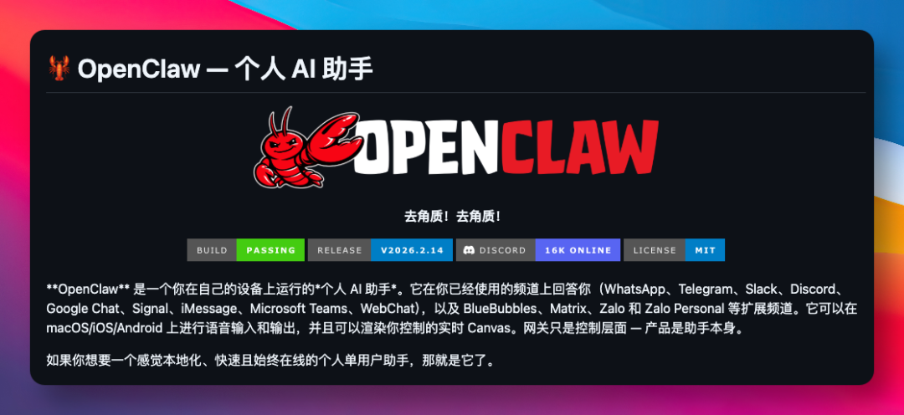
场景 B：自动化流水线与服务器运维，选 ZeroClaw
如果需求是每天定时抓取博客、监控服务器日志，或者在配置较低的云服务器上部署。
那么，ZeroClaw 无疑是最优选。
它那极低的资源占用，能大幅减少服务器资源的浪费。用省下的内存，来运行多一点其他业务，不香吗？
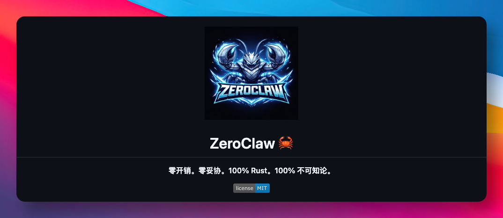
写在最后
现阶段，我们正逐步迈向 Agentic AI 时代。
未来的互联网入口，不再是一个个孤立的 APP，而是无数个像 ZeroClaw 这样极致精简、且无处不在的数字员工。
它们将运行在手机、电脑甚至每一个边缘节点上，把 AI 从昂贵的云端算力中心，真正推向 本地优先 的端侧落地。
ZeroClaw 的出现，标志着 Agent 基础设施开始向工业级标准对齐。
它不仅用 Rust 的严谨抹平了性能鸿沟，更为一人企业提供了批量部署的可能。
随着越来越多开发者投下重注，信号已非常明确。
AI 的下半场，拼的不再是对话的文采，而是以最低成本，执行最高效率。
GitHub 项目地址：https://github.com/theonlyhennygod/zeroclaw
今天的分享到此结束，感谢大家抽空阅读，我们下期再见，Respect！